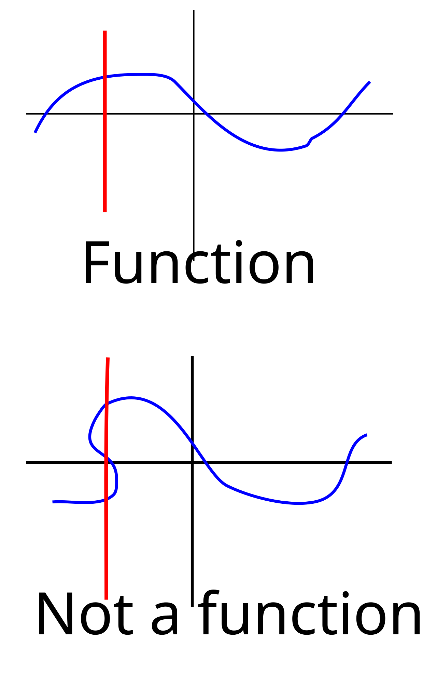
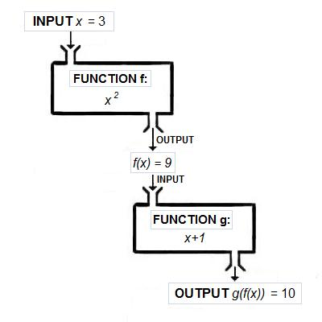
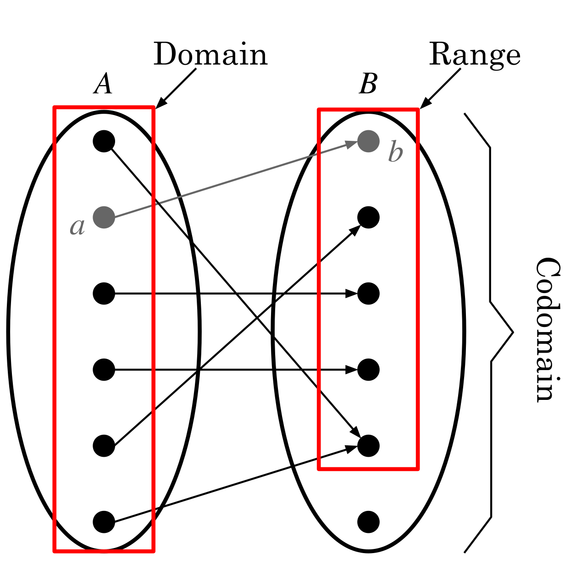
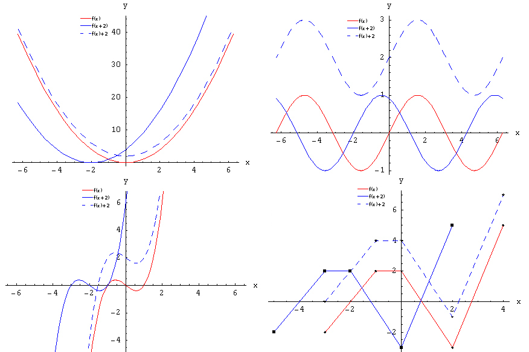

Introduction to Functions
Up to now, algebra has mostly been about solving — find the x that makes the sentence true. This chapter changes the question. Instead of hunting for one answer, we start studying relationships: how one quantity depends on another, all at once, for every possible input. That idea is called a function, and it is the single most important concept in the rest of your math life. Nothing here requires new arithmetic — if you can substitute a number into an expression and simplify, you already have every skill you need. What changes is the way we talk about it, and this chapter walks that new language one careful step at a time.
By the end of this chapter you can
- State the definition of a function and decide whether a set of ordered pairs, a mapping, or a table is one.
- Apply the vertical line test to a graph and explain why it works.
- Read and use function notation, including why f(x) is not multiplication.
- Evaluate f(x) at a number and at an algebraic expression, showing every step.
- Find the domain of a function from its equation by excluding division by zero and even roots of negatives.
- Read domain and range off a graph and write both in interval notation.
- Recognize the six toolkit functions and state the domain, range, and shape of each.
- Describe and apply shifts, reflections, and stretches, and track a single point through a transformation.
Section 1What a function is

The definition, in plain words
A relation is any pairing of inputs with outputs. That is a loose idea — a relation can pair anything with anything. A function is a relation with one extra rule attached, and the rule is short enough to memorize today:
A function assigns to each input exactly one output.
Read that slowly, because every word is load-bearing. Each input must get an output. And each input gets exactly one — not two, not "it depends." Think of a vending machine: you press B4 and you get one specific snack. If pressing B4 sometimes gave you chips and sometimes gave you a candy bar, the machine would be broken. A function is a machine that is not broken.
Notice what the rule does not say. It says nothing about outputs being used only once. Two different inputs are perfectly allowed to give the same output — press B4 and B5 and get the same brand of chips, no problem. The restriction runs in one direction only: one input, one output. Students lose points on this more than almost anything else in the chapter, so it is worth writing on a sticky note.
The input is called the independent variable (usually x), because you get to choose it freely. The output is the dependent variable (usually y), because its value depends on what you chose.
Three ways to spot a function
Relations show up in four common outfits: a list of ordered pairs, a table, a mapping diagram (arrows from a left-hand set to a right-hand set), and a graph. The function test looks slightly different in each costume, but it is always the same question underneath: does any input have two different outputs?
| Form | What to look at | It is a function when… |
|---|---|---|
| Ordered pairs | The first coordinates | No x-value is repeated with a different y-value |
| Table | The input column | No input appears twice with different outputs |
| Mapping diagram | The arrows leaving each left-hand item | Exactly one arrow leaves each input |
| Graph | Vertical lines | No vertical line touches the graph twice |
| Equation | Solve for y | Each x you plug in produces one y |
Worked example 1 — ordered pairs
Decide whether each relation is a function.
Relation A: {(1, 3), (2, 5), (3, 7), (4, 9)}
Step 1. List the inputs (first coordinates): 1, 2, 3, 4.
Step 2. Ask if any repeats. They do not — each input appears exactly once.
Step 3. Conclusion: A is a function.
Relation B: {(1, 3), (2, 5), (3, 7), (2, 9)}
Step 1. List the inputs: 1, 2, 3, 2.
Step 2. The input 2 appears twice. Check its outputs: the pair (2, 5) says the output is 5, and the pair (2, 9) says the output is 9. Since 5 ≠ 9, the input 2 has two different outputs.
Step 3. Conclusion: B is not a function.
Relation C: {(1, 4), (2, 4), (3, 4), (4, 4)}
Step 1. Inputs: 1, 2, 3, 4 — no repeats.
Step 2. The outputs are all 4, which looks suspicious but breaks no rule. Repeated outputs are legal.
Step 3. Conclusion: C is a function (a constant function, in fact).
Worked example 2 — the vertical line test
Does the equation y2 = x make y a function of x?
Step 1. Pick a specific input and see what happens. Let x = 9.
Step 2. Substitute: y2 = 9.
Step 3. Solve. Taking a square root of both sides gives y = ±3, because 32 = 9 and (−3)2 = 9. Both are genuine solutions.
Step 4. Interpret. The single input x = 9 produced two outputs, y = 3 and y = −3. That violates the one-input-one-output rule.
Step 5. Conclusion: y2 = x is not a function of x.
Now look at it graphically. The graph of y2 = x is a parabola opening sideways to the right. Draw the vertical line x = 9. It pierces the curve at the point (9, 3) and again at (9, −3) — two hits. That is exactly the vertical line test: if any vertical line crosses the graph more than once, the graph is not a function.
The vertical line test is not a separate rule you have to memorize on top of the definition — it is the definition, drawn. A vertical line is the set of all points sharing one x-value. If the line hits the graph twice, you have found one x with two y's. That is the whole argument.
- A function assigns exactly one output to each input.
- Repeated outputs are fine; repeated inputs with different outputs are not.
- The vertical line test is the graphical version of that same rule.
- x is the independent variable (you choose it); y is the dependent variable (it follows).
Section 2Function notation

What f(x) means — and what it does not
Instead of writing y = 3x + 1, mathematicians usually write f(x) = 3x + 1. Out loud, that is "f of x equals three x plus one." The letter f is the name of the function, like the name of a recipe. The x in parentheses is the input slot.
Here is the point of confusion that trips up nearly everyone, so let us kill it immediately: f(x) does not mean f times x. The parentheses are not multiplication parentheses. They are a holder announcing "whatever goes in here is the input." If you see f(3), it does not mean 3f — it means "run the number 3 through the rule named f."
Why bother with the extra notation at all? Because it is precise and compact. The single symbol f(3) says "the output of this function when the input is 3." Saying that in y-language takes a whole sentence. And once you have several functions in one problem — f, g, h, or C(x) for cost and R(x) for revenue — the naming keeps them straight.
| You see | You say | It means |
|---|---|---|
| f(x) | "f of x" | The output rule, in general |
| f(3) | "f of 3" | Replace every x with 3 and simplify |
| f(3) = 8 | "f of 3 is 8" | The point (3, 8) is on the graph |
| f(0) | "f of 0" | Input 0 — this gives the y-intercept |
| f(x) = 0 | "f of x equals 0" | Solve for the x that makes the output 0 — the x-intercept |
| f(a + 1) | "f of a plus 1" | Replace every x with the whole quantity (a + 1) |
Worked example 3 — evaluating at a number
Let f(x) = 3x2 − 5x + 2. Find f(−2).
Step 1. Rewrite the rule with an empty slot where every x was:
f( ) = 3( )2 − 5( ) + 2
Step 2. Drop −2 into every slot. Always use parentheses — this is the step that saves you from sign errors:
f(−2) = 3(−2)2 − 5(−2) + 2
Step 3. Exponents first. (−2)2 = (−2)(−2) = 4. Note the parentheses matter enormously here: (−2)2 = 4, but −22 = −4.
f(−2) = 3(4) − 5(−2) + 2
Step 4. Multiply. 3(4) = 12, and −5(−2) = +10 (negative times negative is positive):
f(−2) = 12 + 10 + 2
Step 5. Add left to right. 12 + 10 = 22, then 22 + 2 = 24.
f(−2) = 24
What did we actually learn? That the point (−2, 24) sits on the graph of f. Every evaluation is a point.
Worked example 4 — evaluating at an expression
Let f(x) = x2 − 3. Find f(a + 1).
Step 1. Every x becomes the entire quantity (a + 1), parentheses included:
f(a + 1) = (a + 1)2 − 3
Step 2. Expand the square. Remember (a + 1)2 means (a + 1)(a + 1), not a2 + 1:
(a + 1)(a + 1) = a2 + a + a + 1 = a2 + 2a + 1
Step 3. Substitute back and combine:
f(a + 1) = a2 + 2a + 1 − 3 = a2 + 2a − 2
Step 4. Sanity check with a number. Let a = 3. Our answer predicts 32 + 2(3) − 2 = 9 + 6 − 2 = 13. Directly: f(3 + 1) = f(4) = 42 − 3 = 16 − 3 = 13. They match, so the algebra is right.
Worked example 5 — going backwards
Let f(x) = 2x + 7. Find the value of x for which f(x) = 19.
Step 1. Notice the direction. Here we are handed the output and asked for the input — the reverse of example 3.
Step 2. Set the rule equal to the given output: 2x + 7 = 19.
Step 3. Subtract 7 from both sides: 2x + 7 − 7 = 19 − 7, so 2x = 12.
Step 4. Divide both sides by 2: x = 6.
Step 5. Check by substituting back: f(6) = 2(6) + 7 = 12 + 7 = 19. ✓
x = 6
- f(x) is read "f of x" and is never multiplication.
- To evaluate, replace every x with the input in parentheses, then simplify by order of operations.
- Inputs can be expressions: f(a + 1) substitutes the whole quantity.
- f(3) = 8 is the same statement as "the point (3, 8) is on the graph."
Section 3Domain and range

Two sets, one function
The domain is the set of every input the function is allowed to accept. The range is the set of every output it actually produces. If a function is a machine, the domain is the list of raw materials it can process and the range is the list of products that come out.
Most algebra functions accept every real number, and when that happens we simply say the domain is all real numbers. Trouble only arrives from two places, and in this course those two are the entire list:
- Division by zero is undefined. Any input that makes a denominator equal zero must be thrown out.
- Even roots of negative numbers are not real. Any input that makes the inside of a square root (or fourth root, sixth root, …) negative must be thrown out.
That is it. If the function has no fraction with a variable underneath and no square root with a variable inside, its domain is all real numbers — you do not have to hunt for a problem that is not there.
Interval notation
Domains and ranges are usually written in interval notation, a compact shorthand. A square bracket means "include this endpoint," a parenthesis means "get as close as you like but do not include it." Infinity is not a number you can reach, so it always gets a parenthesis. The union symbol ∪ means "and also this piece."
| In words | Inequality | Interval notation |
|---|---|---|
| All numbers bigger than 3 | x > 3 | (3, ∞) |
| 3 and everything bigger | x ≥ 3 | [3, ∞) |
| Everything less than 5 | x < 5 | (−∞, 5) |
| 5 and everything smaller | x ≤ 5 | (−∞, 5] |
| Between −2 and 5, including −2 only | −2 ≤ x < 5 | [−2, 5) |
| All real numbers | — | (−∞, ∞) |
| All reals except 4 | x ≠ 4 | (−∞, 4) ∪ (4, ∞) |
Worked example 6 — domain of a rational function
Find the domain of f(x) = (x + 2)/(x2 − 9).
Step 1. Spot the hazard. There is a variable in the denominator, so division by zero is possible. There is no square root, so that hazard does not apply.
Step 2. Set the denominator equal to zero and solve — these are the values to exclude:
x2 − 9 = 0
Step 3. Add 9 to both sides: x2 = 9.
Step 4. Take the square root of both sides, keeping both signs: x = ±3, so x = 3 or x = −3.
Step 5. Verify one of them. At x = 3 the denominator is 32 − 9 = 9 − 9 = 0, and the numerator is 3 + 2 = 5, giving 5/0, which is undefined. Confirmed.
Step 6. Write the answer. The domain is every real number except 3 and −3:
(−∞, −3) ∪ (−3, 3) ∪ (3, ∞)
Notice we did not touch the numerator. The numerator being zero is perfectly fine — f(−2) = 0/((−2)2 − 9) = 0/(4 − 9) = 0/(−5) = 0, a legitimate output. Only zero in the denominator is fatal.
Worked example 7 — domain and range of a square root function
Find the domain and range of g(x) = √(2x − 8).
Step 1. Spot the hazard. A square root, so the inside must not be negative.
Step 2. Set the inside greater than or equal to zero:
2x − 8 ≥ 0
Step 3. Add 8 to both sides: 2x ≥ 8.
Step 4. Divide both sides by 2. Dividing by a positive number leaves the inequality direction alone: x ≥ 4.
Step 5. Domain in interval notation: [4, ∞). The bracket on 4 is correct because x = 4 is allowed — it gives √0, and √0 = 0 is a real number.
Step 6. Test the boundary and one point on each side. g(4) = √(2(4) − 8) = √(8 − 8) = √0 = 0 ✓. g(6) = √(2(6) − 8) = √(12 − 8) = √4 = 2 ✓. g(3) = √(2(3) − 8) = √(6 − 8) = √(−2), which is not a real number — correctly excluded.
Step 7. Range. The principal square root symbol never returns a negative value, so the smallest possible output is 0 (reached at x = 4), and outputs grow without bound as x grows. Range: [0, ∞).
Worked example 8 — both hazards at once, and reading a graph
Find the domain of h(x) = 5/√(x − 1).
Step 1. There is a square root and that root is in a denominator, so both rules apply.
Step 2. The root requires x − 1 ≥ 0, that is x ≥ 1.
Step 3. The denominator requires √(x − 1) ≠ 0, which fails only when x − 1 = 0, that is x = 1.
Step 4. Combine: x ≥ 1 but x ≠ 1 means x > 1. Domain: (1, ∞). The endpoint that was included in step 2 gets kicked back out in step 3 — this is exactly why we check both rules.
Reading a graph is easier still: domain is what you see scanning left to right, range is what you see scanning bottom to top. For the parabola y = x2 − 4, the curve stretches forever left and forever right, so the domain is (−∞, ∞). Vertically, the lowest point is the vertex at (0, −4) — check it: y = 02 − 4 = −4 — and the arms rise forever, so the range is [−4, ∞), with a bracket because −4 is actually attained.
- Domain = allowed inputs; range = resulting outputs.
- Exclude inputs that make a denominator zero or put a negative under an even root.
- Brackets include an endpoint, parentheses exclude it; ∞ always gets a parenthesis.
- From a graph: domain is read left to right, range is read bottom to top.
Section 4Graphs of basic functions

The toolkit
There are six graphs that show up constantly in college algebra, and every other function in the course is one of these six wearing a disguise. They are called the toolkit functions (or parent functions). Learning their shapes now means that later, when you meet y = −2(x − 3)2 + 5, you will not start from scratch — you will recognize a parabola and adjust.
You do not memorize these by staring at pictures. You memorize them by plotting three or four points by hand, once, and letting the shape emerge. Do that today and it sticks.
| Name | Rule | Shape | Domain | Range |
|---|---|---|---|---|
| Linear (identity) | f(x) = x | Straight line through the origin, rising 1 for each 1 right | (−∞, ∞) | (−∞, ∞) |
| Quadratic | f(x) = x2 | Parabola, vertex (0, 0), opens up, symmetric about the y-axis | (−∞, ∞) | [0, ∞) |
| Absolute value | f(x) = |x| | A sharp V with its corner at (0, 0) | (−∞, ∞) | [0, ∞) |
| Square root | f(x) = √x | Half a parabola lying on its side, starting at (0, 0) and rising right | [0, ∞) | [0, ∞) |
| Cubic | f(x) = x3 | A stretched S through the origin, rising from lower left to upper right | (−∞, ∞) | (−∞, ∞) |
| Reciprocal | f(x) = 1/x | Two separate branches hugging the axes; never touches either | (−∞, 0) ∪ (0, ∞) | (−∞, 0) ∪ (0, ∞) |
Worked example 9 — building the cubic by hand
Make a table of values for f(x) = x3 using x = −2, −1, 0, 1, 2, and describe the shape.
f(−2) = (−2)3 = (−2)(−2)(−2). Work left to right: (−2)(−2) = 4, then 4(−2) = −8. So f(−2) = −8.
f(−1) = (−1)3 = (−1)(−1)(−1) = 1(−1) = −1.
f(0) = 03 = 0.
f(1) = 13 = 1.
f(2) = 23 = (2)(2)(2) = 4(2) = 8.
| x | −2 | −1 | 0 | 1 | 2 |
|---|---|---|---|---|---|
| x3 | −8 | −1 | 0 | 1 | 8 |
| x2 | 4 | 1 | 0 | 1 | 4 |
| |x| | 2 | 1 | 0 | 1 | 2 |
Plot (−2, −8), (−1, −1), (0, 0), (1, 1), (2, 8) and connect smoothly. You get the S-curve: it comes up steeply from the lower left, flattens briefly at the origin, then climbs steeply again. Because cubing keeps the sign of the input and the outputs grow without bound in both directions — down toward −∞ on the left and up toward ∞ on the right, with no gaps along the way — the cubic's range is all real numbers — a genuine difference from the quadratic in the row above it, which never goes below 0.
Compare the three rows in that table and the differences jump out. The squaring row and the absolute-value row are both symmetric — the value at −2 equals the value at 2 — which is why both graphs fold neatly over the y-axis. The cubing row is anti-symmetric: −8 versus 8. That is why the cubic never folds; it spins.
Worked example 10 — square root and reciprocal
For f(x) = √x, choose perfect squares so the arithmetic stays clean:
f(0) = √0 = 0, because 02 = 0.
f(1) = √1 = 1, because 12 = 1.
f(4) = √4 = 2, because 22 = 4.
f(9) = √9 = 3, because 32 = 9.
Points (0, 0), (1, 1), (4, 2), (9, 3) show the signature behavior: the curve rises quickly at first, then flattens. Nothing exists to the left of x = 0, which is the domain [0, ∞) drawn.
For f(x) = 1/x:
f(−2) = 1/(−2) = −½.
f(−½) = 1/(−½) = −2, since dividing by one-half doubles.
f(0) is undefined — 1/0 has no value.
f(½) = 1/(½) = 2.
f(2) = 1/2 = ½.
Two things follow. As x approaches 0 the outputs blow up in size, so the graph races up the y-axis on the right and down it on the left without ever touching it. And as x grows large the outputs shrink toward 0 without reaching it. Those two invisible guide lines, x = 0 and y = 0, are the asymptotes, and the gap at x = 0 is why this is the one toolkit function whose graph comes in two disconnected pieces.
- Six toolkit functions: x, x2, |x|, √x, x3, and 1/x.
- x2 and |x| have range [0, ∞); x, x3 reach every real output.
- √x has domain [0, ∞); 1/x excludes 0 from both domain and range.
- Every restricted domain shows up on the graph as a missing region or a break.
Section 5Transformations

Moving a graph without redrawing it
A transformation changes a graph's position or proportions while keeping its essential shape. Once you know the six toolkit shapes, transformations let you graph hundreds of functions without ever plotting a point. The whole system rests on three moves: shifts (slide it), reflections (flip it), and stretches (pull or squash it).
There is one quirk that confuses everyone the first time, so let us name it up front. Changes made outside the function do what you expect — add 3 outside and the graph goes up 3. Changes made inside the parentheses, next to the x, do the opposite of what you expect — you see x − 3 inside and the graph goes right 3, not left.
Why? Because the input change happens before the rule runs. In f(x − 3), to get the output that f used to give at 0, you now need x − 3 = 0, meaning x = 3. The interesting behavior moved to a larger x. It moved right. Understanding that one sentence beats memorizing the rule.
| Form | Inside or outside | Effect on the graph | Example |
|---|---|---|---|
| f(x) + k | Outside | Shift up k units | x2 + 3 sits 3 higher |
| f(x) − k | Outside | Shift down k units | x2 − 3 sits 3 lower |
| f(x − h) | Inside | Shift right h units (opposite sign) | (x − 3)2 has vertex (3, 0) |
| f(x + h) | Inside | Shift left h units (opposite sign) | (x + 3)2 has vertex (−3, 0) |
| −f(x) | Outside | Reflect across the x-axis (flip upside down) | −x2 opens down |
| f(−x) | Inside | Reflect across the y-axis (flip left-right) | √(−x) points left |
| a·f(x), a > 1 | Outside | Vertical stretch by a — taller and narrower | 3x2 is steeper |
| a·f(x), 0 < a < 1 | Outside | Vertical compression — flatter and wider | ½x2 is flatter |
| f(bx), b > 1 | Inside | Horizontal compression by a factor of 1/b | Graph squeezed toward the y-axis |
| f(bx), 0 < b < 1 | Inside | Horizontal stretch by a factor of 1/b | Graph pulled away from the y-axis |
Worked example 11 — decoding a full transformation
Describe the graph of g(x) = −2(x − 3)2 + 5 as a sequence of transformations of f(x) = x2, then verify with points.
Step 1. Identify the parent. The squared quantity tells you this starts as the parabola f(x) = x2.
Step 2. Read the inside first: (x − 3)2. Inside means horizontal, and the sign flips, so this is a shift right 3. The vertex leaves (0, 0) and lands at (3, 0).
Step 3. Read the multiplier: the 2 in −2. That is outside, so it is a vertical stretch by a factor of 2 — every height doubles, making the parabola narrower.
Step 4. Read the negative sign in −2. That is a reflection across the x-axis, so the parabola now opens downward.
Step 5. Read the +5 on the outside: a shift up 5. The vertex moves from (3, 0) to (3, 5).
Step 6. Verify by evaluating. This is the step that makes the answer trustworthy rather than hopeful.
g(3) = −2(3 − 3)2 + 5 = −2(0)2 + 5 = −2(0) + 5 = 0 + 5 = 5. Vertex confirmed at (3, 5). ✓
g(4) = −2(4 − 3)2 + 5 = −2(1)2 + 5 = −2(1) + 5 = −2 + 5 = 3. Point (4, 3).
g(2) = −2(2 − 3)2 + 5 = −2(−1)2 + 5 = −2(1) + 5 = −2 + 5 = 3. Point (2, 3) — the mirror image of (4, 3), exactly as symmetry about x = 3 requires. ✓
g(5) = −2(5 − 3)2 + 5 = −2(2)2 + 5 = −2(4) + 5 = −8 + 5 = −3. Point (5, −3).
Outputs falling away on both sides of the vertex confirm the downward opening. The range is (−∞, 5], since 5 is the maximum and it is attained.
Worked example 12 — tracking one point through
The point (2, 4) lies on f(x) = x2, since 22 = 4. Where does it end up on g(x) = −2(x − 3)2 + 5?
Step 1. Handle the x-coordinate using the inside change. We need the inside quantity to equal the old input: x − 3 = 2, so x = 2 + 3 = 5. The new x-coordinate is 5.
Step 2. Handle the y-coordinate using the outside changes, in the order they act. Start with the old output 4. Multiply by −2: 4(−2) = −8. Then add 5: −8 + 5 = −3.
Step 3. The image point is (5, −3).
Step 4. Check against the direct computation from example 11: we already found g(5) = −3. The two methods agree. ✓
One more, with a different parent. For h(x) = |x + 4| − 2: the inside x + 4 shifts left 4, and the outside −2 shifts down 2, so the V's corner moves from (0, 0) to (−4, −2). Check: h(−4) = |−4 + 4| − 2 = |0| − 2 = 0 − 2 = −2 ✓. And h(0) = |0 + 4| − 2 = |4| − 2 = 4 − 2 = 2, so (0, 2) is on the graph — four units right of the corner and four units up, exactly the slope-1 arm of a V.
- Outside changes are vertical and behave as written; inside changes are horizontal and reverse.
- −f(x) flips over the x-axis; f(−x) flips over the y-axis.
- a > 1 stretches vertically; 0 < a < 1 compresses vertically.
- Always verify with two or three evaluated points — it catches sign errors instantly.
The chapter in one breath
- A function assigns exactly one output to each input; repeated outputs are legal, repeated inputs with different outputs are not.
- The vertical line test is that definition drawn: two hits on one vertical line means one input gave two outputs.
- f(x) is read "f of x" and is never multiplication; to evaluate, substitute the input in parentheses everywhere x appears.
- f(0) asks for an output and gives the y-intercept; f(x) = 0 asks for an input and gives an x-intercept.
- The domain is found by exclusion — throw out zero denominators and negatives under even roots; the range is what comes out.
- Read a graph left to right for domain, bottom to top for range, and write both in interval notation.
- The six toolkit functions — x, x2, |x|, √x, x3, 1/x — are the shapes every later graph is built from.
- Transformations move those shapes: outside changes are vertical and literal, inside changes are horizontal and reversed.
ReferenceWords worth knowing
A quick reference for the vocabulary in this chapter — skim it now, and circle back any time a word slows you down.
- Absolute value function
- The toolkit function f(x) = |x|, whose graph is a V with its corner at the origin; domain (−∞, ∞), range [0, ∞).
- Asymptote
- An invisible line a graph approaches but never touches, such as x = 0 and y = 0 for f(x) = 1/x.
- Cubic function
- The toolkit function f(x) = x3, an S-shaped curve through the origin; domain and range are both all real numbers.
- Dependent variable
- The output variable, usually y or f(x), whose value is determined by the input.
- Domain
- The set of all inputs a function is allowed to accept.
- Function
- A relation that assigns exactly one output to each input.
- Function notation
- Writing a rule as f(x), read "f of x," where f names the function and the parentheses hold the input.
- Horizontal shift
- A sideways slide produced by a change inside the function, f(x − h); the graph moves opposite the sign, so x − 3 moves it right 3.
- Independent variable
- The input variable, usually x, whose value you are free to choose.
- Interval notation
- Shorthand for a set of numbers using brackets to include endpoints and parentheses to exclude them, as in [4, ∞).
- Linear function
- A function whose graph is a straight line; the toolkit version is the identity function f(x) = x.
- Mapping diagram
- A picture with arrows from each input to its output; it shows a function when exactly one arrow leaves each input.
- Quadratic function
- The toolkit function f(x) = x2 and its transformations; the graph is a parabola.
- Range
- The set of all outputs a function actually produces.
- Reciprocal function
- The toolkit function f(x) = 1/x, graphed as two branches with asymptotes at x = 0 and y = 0.
- Reflection
- A flip of the graph; −f(x) flips it across the x-axis and f(−x) flips it across the y-axis.
- Relation
- Any pairing of inputs with outputs; every function is a relation, but not every relation is a function.
- Square root function
- The toolkit function f(x) = √x; domain [0, ∞), range [0, ∞).
- Toolkit functions
- The six standard parent graphs — x, x2, |x|, √x, x3, and 1/x — that later functions are built from.
- Transformation
- A change of a graph's position or proportions — a shift, reflection, stretch, or compression — that preserves its basic shape.
- Vertical line test
- A graph represents a function if and only if no vertical line intersects it more than once.
- Vertical stretch
- Multiplying outputs by a > 1 in a·f(x), making the graph taller and narrower; 0 < a < 1 compresses it instead.